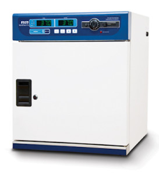

Isotherm® Forced Convection Laboratory IncubatorsWorld class laboratory incubators from Esco with the technologies and compliance to prove it.
General
Introducing Esco Isotherm – world class laboratory incubators from Esco with the technologies and compliance to prove it. Ergonomic, intuitive interfaces, microprocessor PID controls with programming options, 4 zone heated air jacket, precisely tuned and tested ventilation and insulation package, all supported by Esco’s solutions – based sales and service representatives worldwide.
Key Benefits:
- 4 zone heated air jacket
- Heat up to 100oC
- Clean shelving system
- Computer controllable via Voyager software
Available in the following sizes: 32 L, 54 L, 110 L, 170 L, 240 L
Features
Safe, Superior Protection for Sample, User and the Environment
- Multiple redundant over-temperature protection systems to guarantee maximum sample and user protection.
- Electronic over-temperature protection built into the microprocessor.
- Redundant mechanical over-temperature protection, adjustable from the front, independent from the microprocessor.
- Overall temperature protection meets DIN 12880 Class 3.1.
- Red LED illuminates if external mechanical temperature protection is engaged.
- Controller will control temperature at the over temperature setpoint.
- All electrical components UL recognized.
- Electrical circuit protection in accordance with UL requirements.
Ergonomic Design Improves Convenience
- Ergonomic door handle, operation is gravity assisted.
- Bright LED displays mounted at top (not base) of the device are easily read from across the laboratory.
- 2 shelves in all the models.
- Directly mounted shelves increase usable chamber space.
Easy-to-Clean
- “Cleanroom” design with minimal joints and crevices is easy to clean.
- Single piece stainless steel chamber with rounded corners.
- Formed direct shelf mounts reduce chamber hardware and reduce difficult to clean spaces.
- Glass door is dismountable without tools for easy cleaning.
Easy-to-Service
- Diagnostic functions in the microprocessor include historical read-out of temperatures.
- Diagnostic menu provides read-out of all sensor inputs and controller settings.
- Service can be carried out from the front.
- All electronic components are isolated from the work chamber, and easily accessible for replacement.
- Low service costs.
- Access port available as a standard feature.
Accessories
- TOA-1005 : Wall Bracket for IFA-32-8
- TOA-1006 : Wall Bracket for IFA-54-8
- TOA-1007 : Support stand, 703 mm (27.7″ for IFA-32-8)
- TOA-1008 : Support stand, 703 mm (27.7″ for IFA-54-8)
- TOA-1009 : Support stand, 703 mm (27.7″ for IFA-110-8)
- TOA-1010 : Support stand, 703 mm (27.7″ for IFA-170-8)
- TOA-1011 : Support stand, 703 mm (27.7″ for IFA-240-8)
- TOA-1012 : Additional shelf, for Support stand, for IFA-32-8
- TOA-1013 : Additional shelf, for Support stand, for IFA-54-8
- TOA-1014 : Additional shelf, for Support stand, for IFA-110-8
- TOA-1018 : Additional shelf, for Support stand, for IFA-170-8
- TOA-1019 : Additional shelf, for Support stand, for IFA-240-8
- 5250001 : Voyager Software
| Models | Description |
| IFA-32-8 | Isotherm® General Purpose Incubator, 32 L, 220-240 VAC 50/60 Hz |
| IFA-32-8-SS | Isotherm® General Purpose Incubator, Stainless Steel Exterior Cabinet, 32 L, 220-240 VAC 50/60 Hz |
| IFA-54-8 | Isotherm® General Purpose Incubator, 54 L, 220-240 VAC 50/60 Hz |
| IFA-54-8-SS | Isotherm® General Purpose Incubator, Stainless Steel Exterior Cabinet, 54 L, 220-240 VAC 50/60 Hz |
| IFA-110-8 | Isotherm® General Purpose Incubator, 110 L, 220-240 VAC 50/60 Hz |
| IFA-110-8-SS | Isotherm® General Purpose Incubator, Stainless Steel Exterior Cabinet, 110 L, 220-240 VAC 50/60 Hz |
| IFA-170-8 | Isotherm® General Purpose Incubator, 170 L, 220-240 VAC 50/60 Hz |
| IFA-170-SS | Isotherm® General Purpose Incubator, Stainless Steel Exterior Cabinet, 170 L, 220-240 VAC 50/60 Hz |
| IFA-240-8 | Isotherm® General Purpose Incubator, 240 L, 220-24 0VAC 50/60 Hz |
| IFA-240-8-SS | Isotherm® General Purpose Incubator, Stainless Steel Exterior Cabinet, 240 L, 220-240 VAC 50/60 Hz |